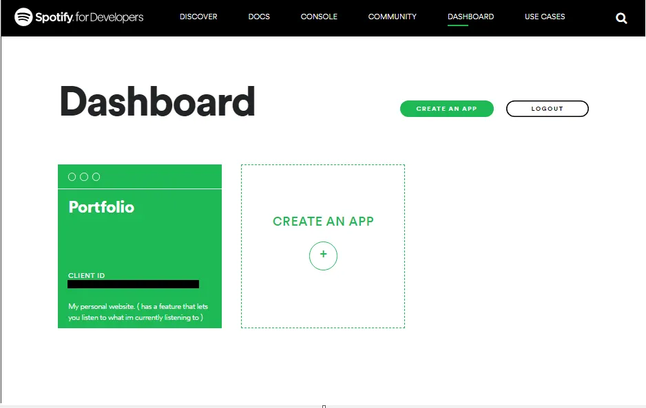
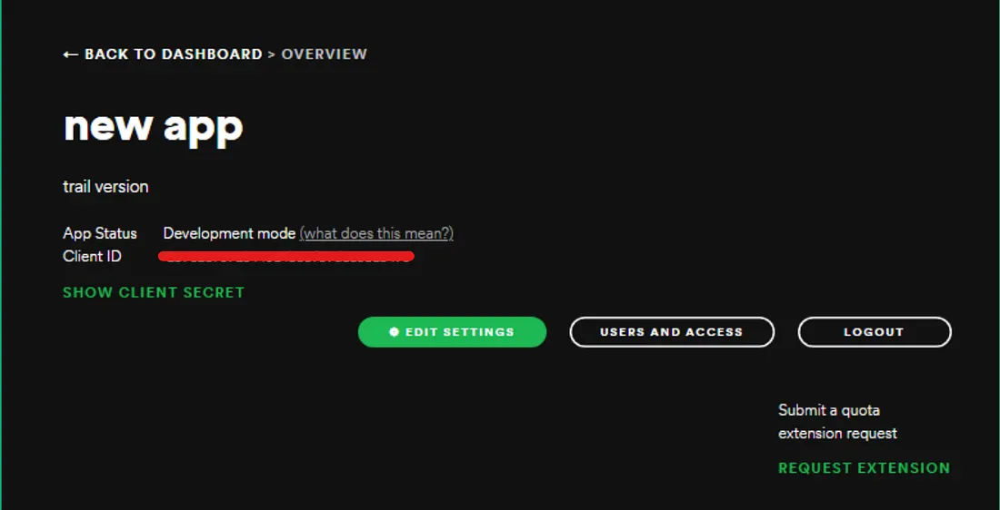
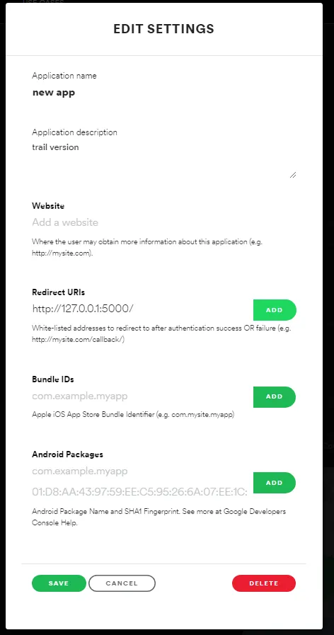

Display currently playing Song with Spotipy API in Flask
Spotipy Is a python Extension to Spotify API. We will be looking at how we can use it in our personal website and display the song our account is Currently Playing. It is a nice little add on to a portfolio and u can use it to change themes as you listen to Songs too! So lets get Started…
SPOTIFY FOR DEVELOPERS:
Lets go to Spotify for developers and make an account to be able to use this API.
After login/signup go to the dashboard and Create a New App.

this app is going to be used as a gateway to make all the transactions to Spotify to Fetch all the data you require for your app.
Copy The Client ID key and Client Secret from the app and paste it in a new text file.

SPOTIPY_CLIENT_ID = "client-id-key"
SPOTIPY_CLIENT_SECRET = "client-secret-key"
SPOTIPY_REDIRECT_URI='http://127.0.0.1:5000/'here just copy the SPOTIPY_REDIRECT_URI, we will see its use in the later part of this article
Go to > Edit Settings and fill out redirect URIs to your local host and save settings. (After you deploy the website, make sure you add the appropriate URI)

This will allow spotify to redirect users after authentication back to your server.
CODING BEGINS…
Now You are all Set up for coding .
Considering you have a basic understanding of how flask works. (if not here is a basic tutorial) :-
let us First Install Spotipy in your terminal. (make sure u install it in the flask env)
pip install spotipy
pip install python-dotenvin app.py
import spotipy
from spotipy.oauth2 import SpotifyClientCredentialsFirst, We need the user ID of the person who's "currently playing" music you want to display .
to find a User ID , Share the profile link, and it should be after "http://open.spotify.com/user/" . (Don't worry if you've never seen that scary looking key , spotify generates the user id randomly)
copy that id and initialize it in a global var in your app.py
user = 'user_id_goes_here'Now we will also require the scope of the user. In simple words, scope is basically the permissions that spotify will ask the user. Yes, The api will first ask the user to allow it to access all the information you want. There are variety of scopes available on the api. here's the list of a few.
we require ability to read currently playing track from the user.
scope = 'user-read-currently-playing'Now we need to generate a Token which takes the user id and scope , authorises the access of data from the user.
token = spotipy.util.prompt_for_user_token(user, scope, redirect_uri = 'http://127.0.0.1:5000/')
sp = spotipy.Spotify(auth = token)let us make a route were we will fetch the data from spotify and post it on our html page.
here Utils is a small component file we made, that has a function that returns only the useful data (since spotify returns a lot of unwanted data that we dont require).
Hiding your private data from the code.
remember the .txt file you saved a while ago? just rename it to .env
Here we use a .env file to Hide our Important keys that will be used to log into the Spotify api. Since we cant hard code it in our app.py since everyone will see it , Environment Files allow you to hide these kind of keys.
your .env file should look like this.
SPOTIPY_CLIENT_ID='client-id'
SPOTIPY_CLIENT_SECRET='client-secret'
SPOTIPY_REDIRECT_URI='http://127.0.0.1:5000/'in app .py make sure to add the follow line after all the import files.
from dotenv import load_dotenv
load_dotenv()all the backend work is over!
FRONTEND :-
this is some cleaned up code since we are not going to control music just display it. Here the front end is not explained as you can design it in the way you want it to. Tho, the JS is explained and the information on the frontend is refreshed using DOM.
also lets write a ajax js code that fetches info of song every second.
ALL DONE!!